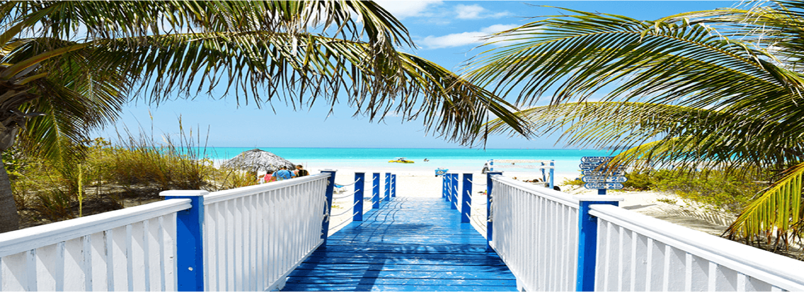
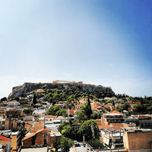
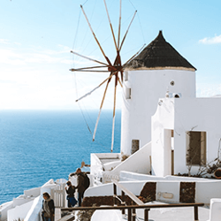
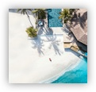
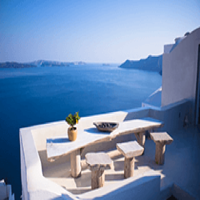
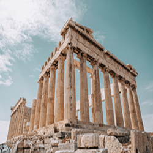
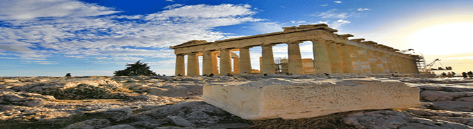
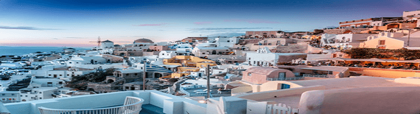
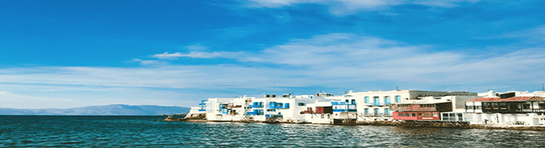
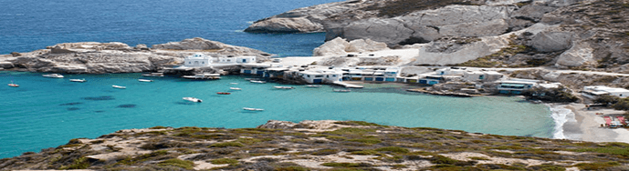

Search

Explore by Interest
-

-

-

-

-

-

Learn About Famous Tours of Greece
Tourism in Greece is a must! It is a beautiful country characterized by its mountainous landscapes, its incredible weather, its many islands, its long sandy beaches and more. Discover our travel guides!
Tours in Athens
 Athens is the best place to discover by tour. Especially the bus sightseeing tour is very popular, as it includes guided visits to the most important monuments in the Greek capital, including the Acropolis, the Kallimarmaro Stadium, the Temple of Zeus, the Arch of Hadrian and many more.Tours in Santorini
 Athens is the best place to discover by tour. Especially the bus sightseeing tour is very popular, as it includes guided visits to the most important monuments in the Greek capital, including the Acropolis, the Kallimarmaro Stadium, the Temple of Zeus, the Arch of Hadrian and many more.Tours in Mykonos
 Although Mykonos is the island of relaxation and fun, there is an interesting historical tour departing from there: the boat excursion to Delos, the sacred island of Apollo, that is an open archaeological site today.Tours in Milos
 Explore the island of Milos easily in a bus or boat tour. The most important tour in Milos is the boat trip to Kleftiko, an amazing region in the southern side of the island with sea caves and underwater passages.- Depending on your country of origin, you might need a passport and a visa.
- Call your bank or your credit card company to let them know that you will be using it in Greece.
- Appliances from North America require a transformer and British ones an adaptor.
- Tourists from countries other than the member states of the European Union must consult their social security agency for information before travelling.
- Contact your phone company in order to make sure that your can use your mobile phone in Greece.